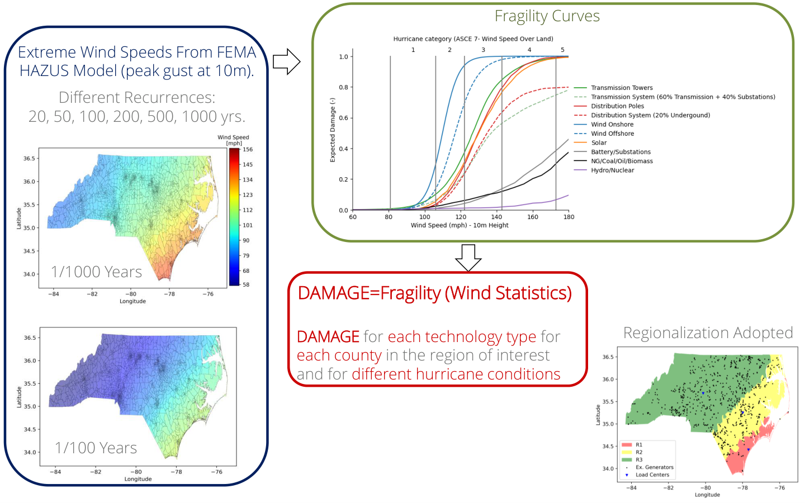

Energy planning under hurricane risk
Hurricane damage can reduce available electricity capacity and increase system costs. A multistage stochastic extension of TEMOA incorporates those risks into long-term generation investment decisions in North Carolina.
From hurricane exposure to investment decisions
FEMA HAZUS wind information describes exposure at different hurricane return periods. Engineering fragility curves translate wind intensity into expected damage for different technologies and locations. The model aggregates this information into a three-region representation of the state, then reduces available capacity as hurricane scenarios unfold.
Investment decisions minimize expected system cost across a scenario tree. The 2023 implementation considered three hurricane-impact levels over six stages, producing 729 possible scenario paths. The broader planning analysis also examines combinations of emissions targets, offshore-wind requirements, technology development, and fuel prices.

Estimating damage by technology and region. The workflow from my 2024 Ph.D. defense, PDF page 33. Wind exposure and fragility curves determine the damage estimates used in the stochastic planning model.
How hurricane risk affects the investment plan
Offshore-wind requirements influence the response. The 2024 defense results show little change in technology activity in cases without offshore-wind requirements, with more noticeable shifts when those requirements are included.
The cost effect depends on the scenario. In the reported conservative technology case with emissions and offshore-wind targets, average stochastic system cost was about 0.8% above the deterministic case without hurricanes. This comparison measures the change in modeled system cost, not total hurricane losses.
Damage timing remains a modeling limitation. The early implementation applies damage at the end of a planning stage. The 2023 presentation identifies damage timing and reserve requirements as areas for further development.
I developed the Python extension and integrated hazard information into TEMOA, connecting engineering estimates of vulnerability with decisions about when, where, and how much electricity capacity to build.